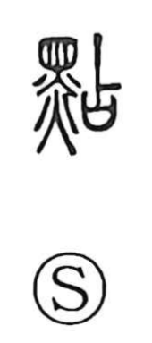

点

Kun: tsuku, tsukeru, sasu, tomosu | On: ten
dot ・ point ・ spot ・ mark ・ score ・ to light ・ to turn on ・ to apply drops
Explanation
点 abbreviates 點, combining 黑, black, with 占 as its phonetic. 占 has an association with a small, delimited place, such as the spot where a wine cup is set. Applied to a mark, this gives a small black speck or blemish.
Making a precise mark can identify, divide, correct, or count. The word therefore extends to points added to a text, checking items, tallying, and assigning a score. A spot can also be a stain or flaw.
The same small application gives touching, adding drops, and kindling a flame at a particular point. In an old protective custom, children received red marks on their foreheads to ward off illness. The modern 点 shortens the full black-mark formation.